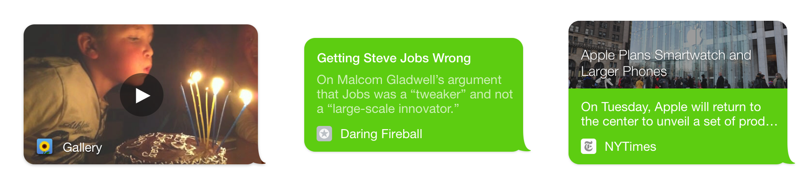

iOS Share Extension
Making Sharing Easy
Context
Since I was part of the “content team” during my internship at Kik, I led the design of the first iOS share extension. The main goal being to ease content sharing of content like links, articles, photos, and videos from other apps. The UI focussed on keeping a delicate balance between branding and also feeling at home on iOS.
The Problem
There was no easy way to share content found outside the app. Althought users were able to copy and paste links into Kik, the current experience had lots of friction.
Setting Constraints
Since my PM was also an engineer, brainstorming with him was easy because we could easily determine what was possible in our current time frame. We came up with ideas for what we could include, then eliminated options we didn't think were feasible.
Feature Ideas
- Attachment previews (not just a text url)
- Multiple attachments
- User search
- Group search
- Send to multiple users
- Send to multiple groups
- User profile photos
Chosen For Development
- Attachment previews (not just a text url)
- Multiple attachments
- User search
- Group search
- Send to multiple users
- Send to multiple groups
- User profile photos
We were rolling out new bubble previews in the app too, so ideally this project would work well with them.
Goals
The goals for this feature were to provide an easy and intuitive way to share content to conversations from outside the Kik app. Ideally by creating an experience that feels at home on iOS, and isn't any more complicated than necessary.
Iterations
After discussing the goals and constraints with my product manager I iterated through many ideas that mostly ended up looking like the main Kik app shrunk in a share extension.

Not a Mini-app
I later realized after reading the Apple Human Interface Guidelines that these designs are probably too complicated for an iOS app extension. An engineer on my team also pointed out this issue.
“An extension isn’t a mini-app. It performs a narrowly scoped task related to the current context.” - Apple Human Interface Guidelines
So I reworked the design to make it more appropriate. I removed the chat history and experimented with making the extension as simple as possible. My designs ended up looking similar to a typical share extension.
Room for Improvement
1. People share the same attachment with a different message depending on the person. A UI that encourages users to write a message before choosing a recipient would result in more generic and less personal messages.
2. Articles and links would need more space when released later on. This design made it feel a bit squished.
Friends
Next I experimented with a design that focused on friends.
Room for Improvement
1. Lots of people on Kik don’t have profile photos, so lots of focus shifts to names to distinguish users.
2. Names couldn't completely fit, this was especially a problem with group chats.
Final Product
Eventually I landed with the design below. You see your recents and are proceeded by a page to write your message and confirm the content you're about to send.
This design allowed us to really take advantage of our bubble previews.
Prototype
Here's a prototype of the final design, it was made with Framer.